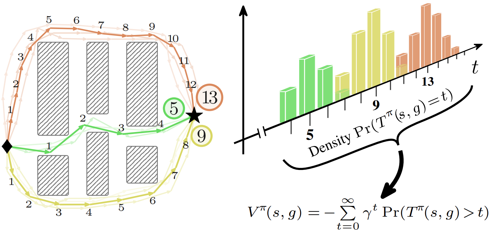
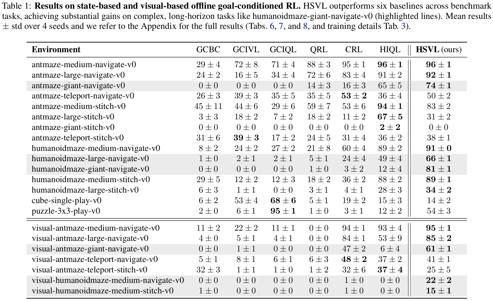

humanoidmaze-giant-navigate where the
best hierarchical baseline (HIQL) achieves only 12%, and non-hierarchical methods fail
(0–3%). On pixel-based benchmarks, HSVL achieves 61% on
visual-antmaze-giant, surpassing the best hierarchical (HIQL, 6%) and contrastive
(CRL, 47%) baselines, and is the only method to extract meaningful signal on
visual-humanoidmaze-medium.
@article{tiofack2026svl,
title={SVL: Goal-Conditioned Reinforcement Learning as Survival Learning},
author={Tiofack, Franki Nguimatsia and Schramm, Fabian and Hellard, Th{\'e}otime Le and Carpentier, Justin},
journal={arXiv preprint arXiv:2604.17551},
year={2026}
}